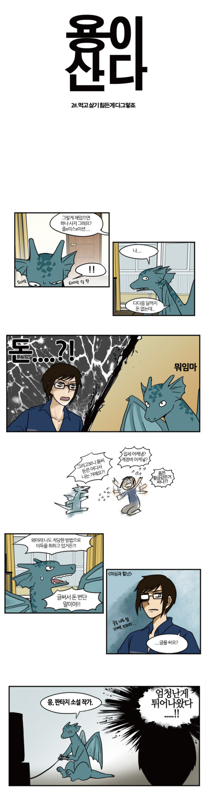
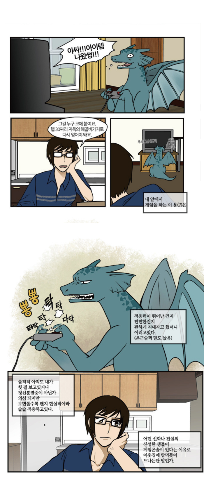
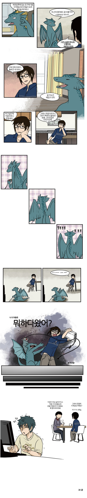
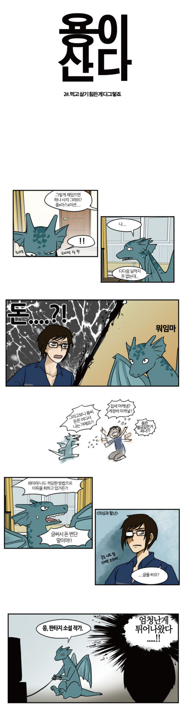
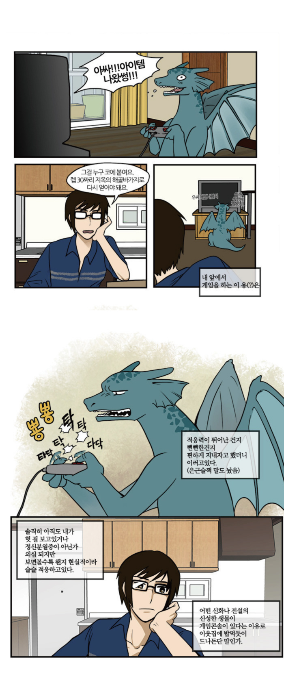
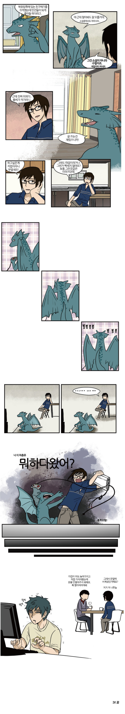

TUESDAY'S WEBTOON
Dragons live
Cho
2013.07.22 ~ 2018.03.02
It started its first series on July 2, 2013, and on April 22, 2014, season 1 ended with a total of 56 paintings. And on August 15 of the same year, the second straight season began. Season 1 was serialized every Wednesday, and season 2 was serialized every Saturday. Season 3 is also a series every Saturday.
Season 1 Lee, who used to work as a freelance web designer, is moving to a new place after becoming independent in two years. In the first moving day, He finds Kim Yong, who looks like a dragon who already has lived in that place. And, they became roommates.